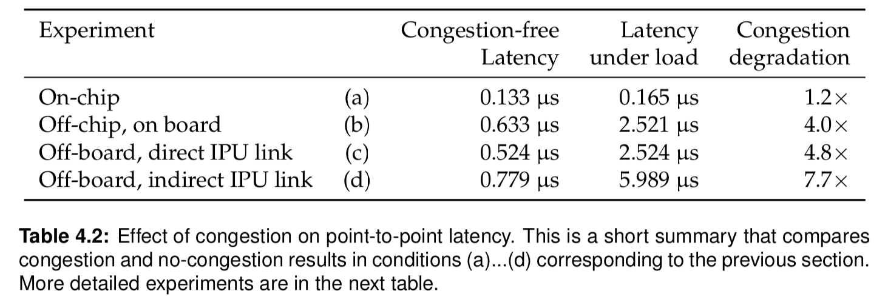

No Load Latency
We look at the point to point transfers of memory, and to establish a baseline, we first micro-bench with global silence (no other traffic on board) to give an idea of the minimum possible latency. This is like driving to different points in your city at night to see the minimum times to get around.
The no-load latency test shows that proximity matters, and it exposes minor architecture decisions such as the tiles are constructed in columns which have the fastest traverse paths.
Full Load Latency
After benchmarking the no load traffic, a full load is investigated, producing a few key results for the IPU architecture: * Congestion increases on-chip latency only marginally (+24%) but affects off chip IPU link latency significantly with slowdowns of 4.0...7.7x * Average per-message latency in a multi-IPU system is remarkably scaleable.
Table 4.2 shows actual experiment results: 